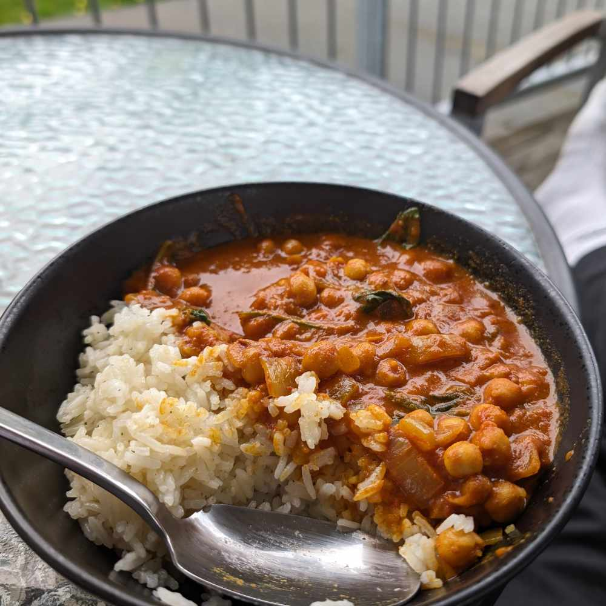

Chana masala inspired chickpea coconut curry

- ⏲️ Prep time: 5 min
- üç≥ Cook time: 10 min
- üçΩÔ∏è Servings: 2 portions (with 2dl rice)
Ingredients
- 1 kg blandfärs
- 2 onion
- 2 green paprika
- similar amount of celery
- 3 garlic cloves
- 2 tbs cajun spices
- salt and pepper
- 7dl rice
- 16dl köttbuljong
Directions
- Fry the blandfärs in olive oil, then add the vegetables.
- Add the rice and köttbuljong and let it sjuda for 20 min.
Go back to cooking page
Go back to homepage